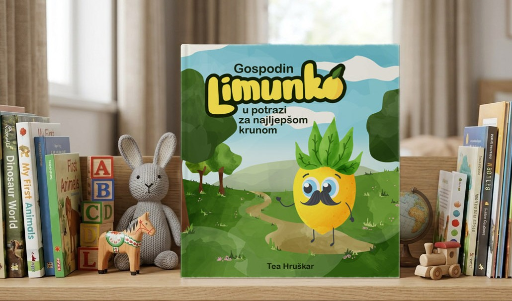
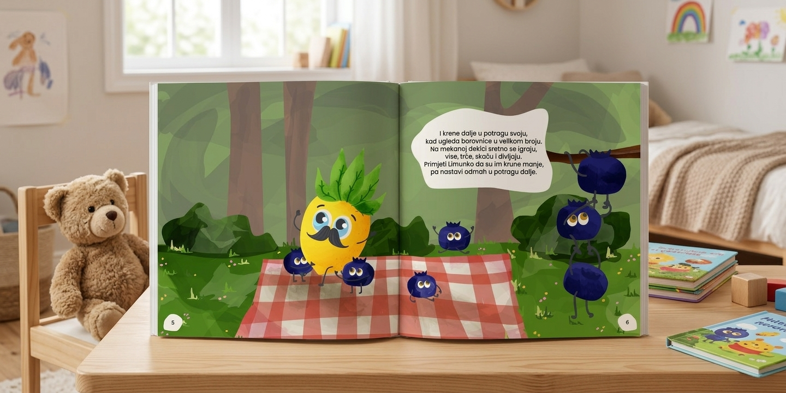
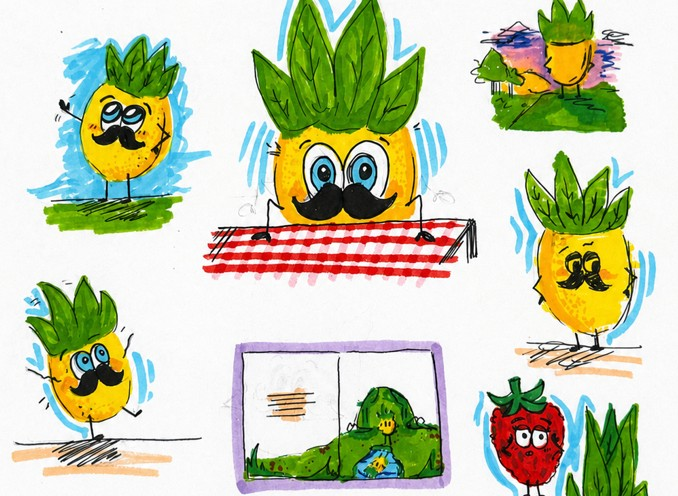
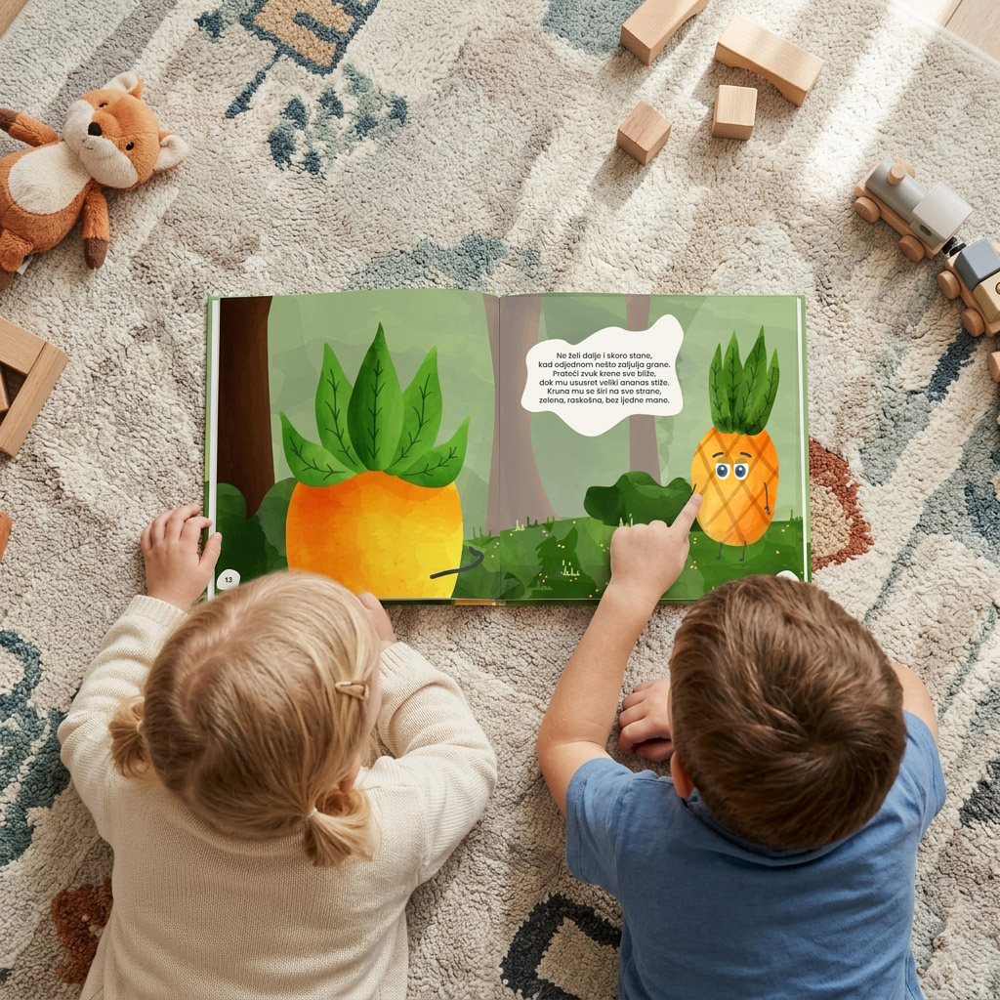
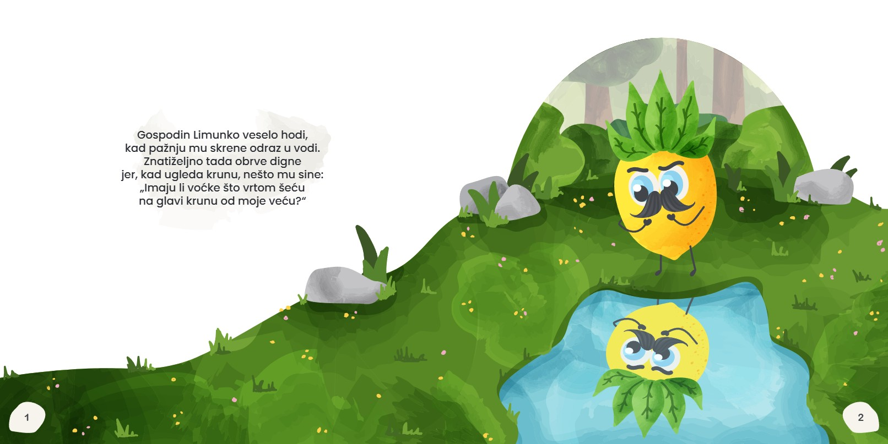
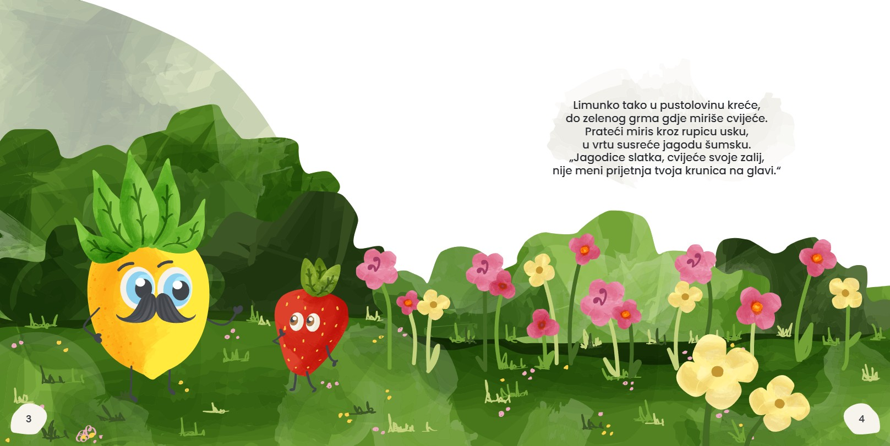
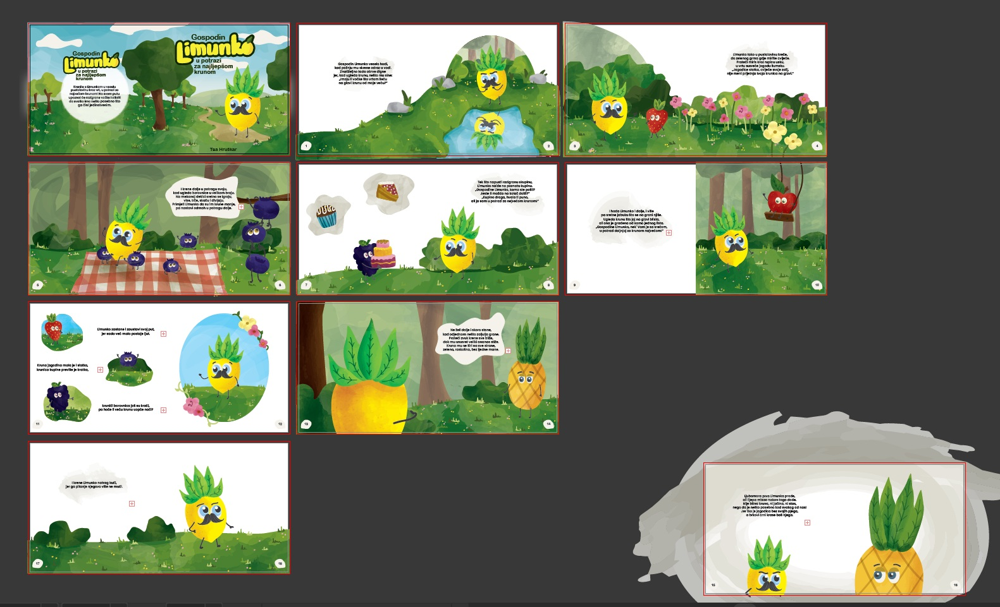
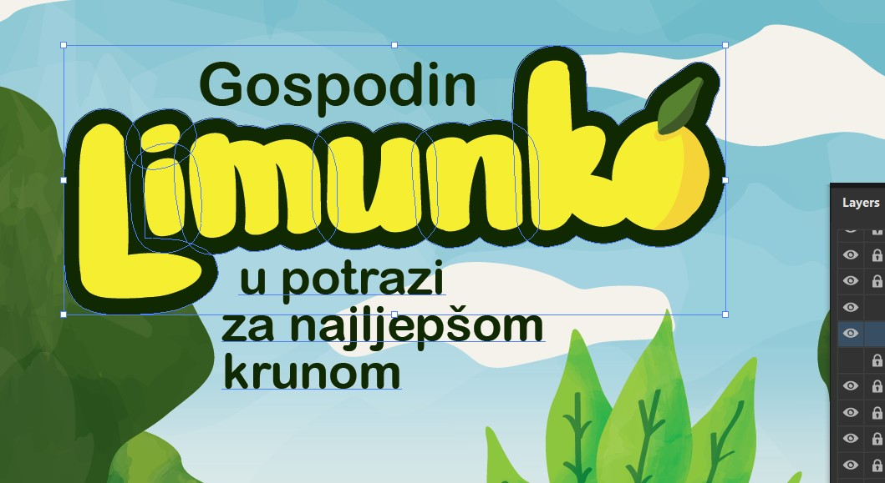
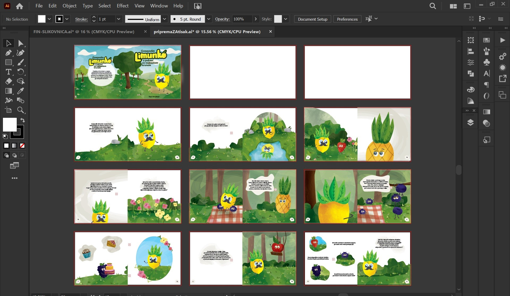

Gospodin Limunko
Slikovnica “Gospodin Limunko u potrazi za najljepšom krunom” nastala je kao ilustrirana priča za djecu kroz koju se upoznaju različite vrste voća, ali i emocije koje likovi prenose izrazom lica. Kroz ritmičan tekst u rimovanim parovima priča vodi prema pouci, a vedri likovi i žarke boje zadržavaju zaigran, pristupačan ton.

Razvoj lika i priče
Proces je započeo istraživanjem glavnog lika Limunka. Kroz niz brzih skica razvila sam njegove prepoznatljive poze, izraze i odnos prema ostalim likovima.

U izrazu lica namjerno nisam koristila usta, kako bih emocije gradila drugim elementima: očima, obrvama, nagibom tijela i gestom. Time se djecu potiče da pažljivije promatraju i prepoznaju osjećaje.

Ilustracija i vizualni jezik
Vizualni stil temelji se na kontrastu sjenčanih, teksturiranih površina i ravnih ploha boje. Tako je naglašena ručno crtana kvaliteta ilustracija, dok su nenatrpane pozadine ostavile dovoljno prostora likovima, tekstu i ritmu priče.
Koristila sam žarke boje, različite kompozicije stranica i promjenjiv odnos praznog prostora, ilustracije i teksta. Svaki spread oblikovan je kao zasebna mala scena, ali je zadržan jedinstven vizualni identitet cijele slikovnice.



Tipografija
Naslov slikovnice oblikovan je kao ručno crtani natpis kako bi zadržao zaigran i mekan karakter ilustracija. Za tekst unutar slikovnice koristila sam Poppins zbog preglednosti, čitljivosti za djecu i zaobljenog oblika slova.
Tekst je građen u rimovanim parovima, po principu AA, BB, CC, što pridonosi ritmu čitanja i pamtljivosti priče.

Format i priprema za tisak
Slikovnica je oblikovana u kvadratnom formatu. Sastoji se od 20 stranica (10 listova) plus korice. Uz finalne digitalne ilustracije, izradila sam raspored stranica za tisak: jedan knjižni slog od 12 stranica i jedan od 8 stranica.
Pripremila sam i ispisala prototip na uredskom printeru, što mi je omogućilo provjeru redoslijeda stranica, prijeloma, formata i čitljivosti prije finalne izvedbe.
